🧠 李善友2026大课笔记：AI时代，人类的终极追问是什么？
Li Shanyou 2026 Lecture: AI Era's Ultimate Question for Humanity
“当AI以周为速度迭代，当所有人被卷入焦虑的漩涡，此刻，更需要用第一性原理firstprinciple[ˈfɜːrst ˈprɪnsəpəl] n. 第一性原理，去追问人类文明不变的地基。是的，去追问，然后站在不变的地基foundation[faʊnˈdeɪʃən] n. 基础上，看创业背后的新趋势，以及人类与AI的终局。2026年，是我从教15年，也是混沌创办12年，我想陪伴accompany[əˈkʌmpəni] v. 陪伴大家，用小蚂蚁敢做大猜想的精神，一起追问大问题。”
“希望在陪伴大家追问的过程中，能激发出一种人之为人humanbeing[ˈhjuːmən ˈbiːɪŋ] n. 人之为人的力量感。”
——混沌chaos[ˈkeɪɒs] n. 混沌创办人 李善友
本次混沌大课，善友教授以一体性宇宙观monisticcosmos[mɒˈnɪstɪk ˈkɒzmɒs] n. 一体性宇宙观的假设为核心，从哲学、物理与商业的角度，猜想AI和创业的终局。
善友教授说：“在这个时代，创业背后的一是什么what[wɒt] pron. 是什么？我相信创业者最关心的是这个问题，但为了这个问题，我们的第一性原理firstprinciples[fɜːrst ˈprɪnsəpəlz] n. 第一性原理必须下移。今天，认知cognition[kɒɡˈnɪʃən] n. 认知已被AI击穿，倒逼我们向下探寻。我们必须从认识论下探至本体论ontology[ɒnˈtɒlədʒi] n. 本体论，追问宇宙背后的一是什么？基于宇宙与文明的一，再来推导deduce[dɪˈdjuːs] v. 推导我们今日该如何创业。”
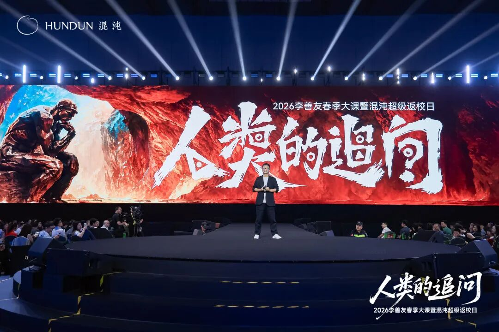
一场深度depth[depθ] n. 深度思辨之旅，现已开讲。以下为善友教授大课第一日内容content[ˈkɒntent] n. 内容：
（温馨提示：一切深刻的思想都始于大胆的猜想conjecture[kənˈdʒektʃər] n. 猜想。本课内容为主讲人立于认知recognize[ˈrekəɡnaɪz] v. 认知前沿的独立思考，其中既有洞察，也有面向未来的大胆假设，愿能为你打开新的视角，也欢迎你带着自己的判断一同思辨。）
从2014年起开讲大课，许多同学classmate[ˈklɑːsmeɪt] n. 同学已陪伴我走过12年。讲台podium[ˈpoʊdiəm] n. 讲台之上，人未变；讲台之下，初心亦未变——我们始终在追问事物背后的本质essence[ˈesəns] n. 本质，追问创业背后的第一性原理。
去年，我们谈论的是“AI的黎明”，是破晓daybreak[ˈdeɪbreɪk] n. 破晓前最黑暗的时刻。此刻，我想我们已经身处AI时代era[ˈɪərə] n. 时代。AI以周为单位迭代、进化，内卷愈演愈烈intensify[ɪnˈtensɪfaɪ] v. 加剧。
有一个现象是，除了AI外，其余所有行业industry[ˈɪndəstri] n. 行业都沦为了传统行业。比如理想汽车automobile[ˈɔːtəməbiːl] n. 汽车也说：“我们不是一家汽车公司，而是一家AI公司。”
大家觉得如果与AI无关，就要被时代无情抛弃abandon[əˈbændən] v. 抛弃。于是，世间分化differentiate[ˌdɪfəˈrenʃieɪt] v. 分化出两类人：
第一类人，业务确实难以与AI挂钩，所以内心愈发焦虑anxiety[æŋˈzaɪəti] n. 焦虑，甚至感到绝望，觉得自己正被时代洪流越抛越远。
第二类人，投身devote[dɪˈvoʊt] v. 投身AI的人就高枕无忧了吗？大多数同学从事AI应用层的创业，站在浪潮tide[taɪd] n. 浪潮之巅时，觉得尽在掌握，无比亢奋；可一旦浪头退去，跌入谷底，又顿感无比抑郁depression[dɪˈpreʃən] n. 抑郁，仿佛被时代遗弃。
去年上半年，大家追逐chase[tʃeɪs] v. 追逐Manus。今年春节，人人养虾，今天today[təˈdeɪ] adv. 今天又有多少人再提“龙虾”？做AI的人也并未拥有真正的true[truː] adj. 真正的幸福。我们试图捕捉capture[ˈkæptʃər] v. 捕捉变化、追赶潮流，却发现倾尽心力也无法追赶。
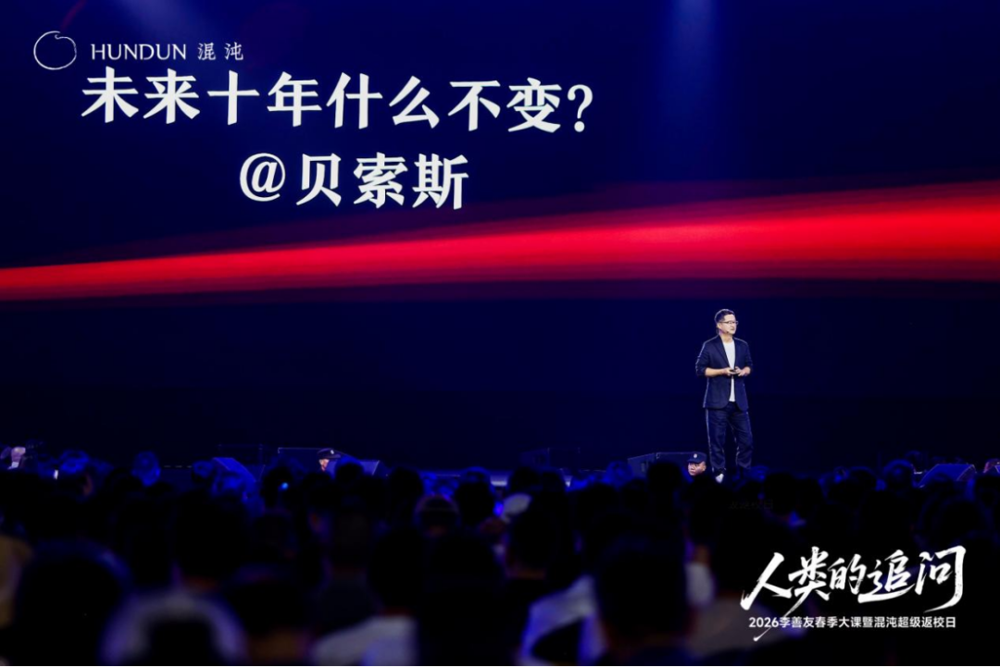
我剖析analyze[ˈænəlaɪz] v. 剖析过贝索斯的案例，他的一句话深深影响了我。
他说，人们总问我未来future[ˈfjuːtʃər] n. 未来十年什么会变，但这或许是个错误的问题。我们更应该问：未来十年，什么是不变unchanged[ʌnˈtʃeɪndʒd] adj. 不变的？唯有找到那个不变之物，我们才能将战略strategy[ˈstrætədʒi] n. 战略资源倾注其上，以此作为恒定的战略支点。
来到混沌的课堂，我无力穷尽AI应用的万千变化variation[ˌveəriˈeɪʃən] n. 变化。但混沌多年来一以贯之的使命，便是追问inquire[ɪnˈkwaɪər] v. 追问创业背后不变的第一性原理。
我将尝试attempt[əˈtempt] v. 尝试回答：未来十年，何为不变？
面对AI的狂奔sprint[sprɪnt] v. 狂奔，静下心来向深处探索，这或许是唯一的出路。
我们探讨哲学，是因为当在日常生活的尺度中找不到那个锚点时，不妨跳出来，去追问最大的biggest[ˈbɪɡɪst] adj. 最大的尺度和最小的尺度。若能拈出一个不变的支点，那大概率便是日常生活尺度下的定海神针pillar[ˈpɪlər] n. 支柱。
这便是这几天课程设置背后的深意implication[ˌɪmplɪˈkeɪʃən] n. 深意。
为什么why[waɪ] adv. 为什么要追问第一性原理？
许多同学来到混沌课堂，希望寻找某些确定性certainty[ˈsɜːrtənti] n. 确定性的答案。但没有人能给你答案，混沌的气质，在于我们前来寻找终极问题ultimatequestion[ˈʌltɪmət ˈkwestʃən] n. 终极问题，而非答案。
“终极”二字意味着，人之所以为人，所能提出的超过你生活边界的最大尺度问题是什么whatis[wɒt ɪz] phrase 是什么？问题problem[ˈprɒbləm] n. 问题能将我们从现有的牢笼中跳脱出来。我们越是执着于追求答案，就越会禁锢confine[kənˈfaɪn] v. 禁锢在原有的时空边界之内。
这和混沌坚持讲授的第一性原理息息相关interrelate[ˌɪntərɪˈleɪt] v. 相互关联。我想，混沌是第一家把哲科思维、第一性原理带给中国创业者entrepreneur[ˌɒntrəprəˈnɜːr] n. 创业者的。当时很多人不理解grasp[ɡræsp] v. 理解，但今天第一性原理已成为行业通用的“黑话”。
通常，我们的提问方式是就事论事：这件事背后的原因是什么whatis[wɒt ɪz] phrase 是什么？原因背后的原因又是什么whatis[wɒt ɪz] phrase 是什么？认为如此连续追问query[ˈkwɪri] v. 追问几次，便能触及真相。
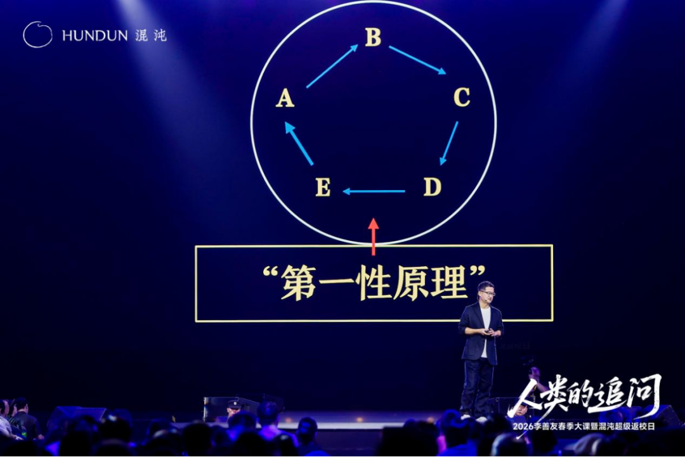
然而，请看这张图：若你仅在具象的经验层面追问probe[proʊb] v. 追问，越是用心，便越将自己禁锢在这个经验世界里，边界极其狭小。
第一性原理，是看见这个边界，并在边界之外进行追问interrogate[ɪnˈterəɡeɪt] v. 追问。来到混沌，是为了打破思维边界boundary[ˈbaʊndri] n. 边界，寻找那样一个第一性原理。
今天，我们依然要为AI时代的创业寻找那个第一性原理，这是我两天大课的全部雄心ambition[æmˈbɪʃən] n. 雄心。
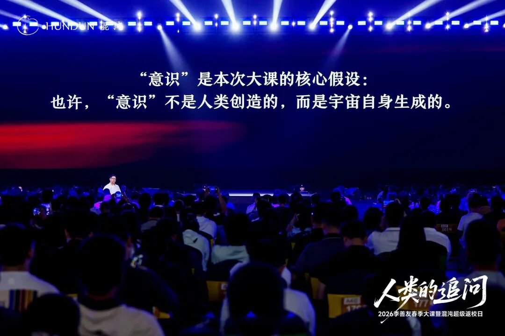
我做了一个核心假设，“意识consciousness[ˈkɒnʃəsnəs] n. 意识”——它是这两天课程的核心词汇。我不能说这是一个确定的答案，我只能称它为一个假设hypothesis[haɪˈpɒθəsɪs] n. 假设。
我们有四层终极追问interrogate[ɪnˈterəɡeɪt] v. 追问，都围绕这个假设层层展开。此次大课是我讲过的，难度最高、尺度最大的maximum[ˈmæksɪməm] adj. 最大的一次了。
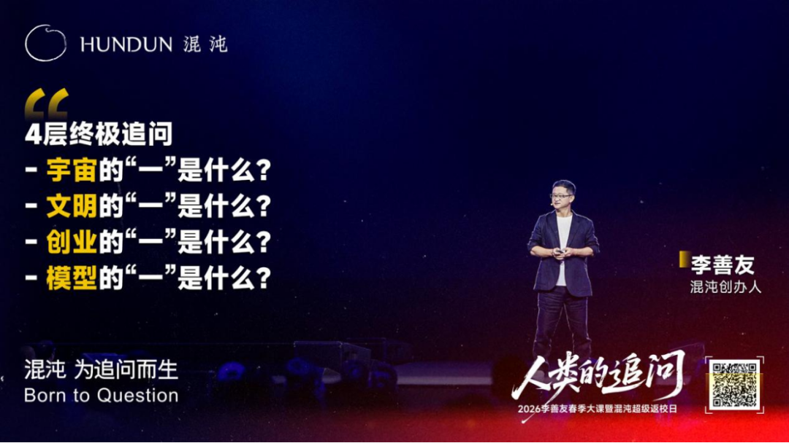
第一，追问ask[æsk] v. 追问宇宙。宇宙的一是什么whatis[wɒt ɪz] phrase 是什么？并非回答宇宙本身是什么whatis[wɒt ɪz] phrase 是什么，而是要将尺度踏在宇宙之外。
第二，追问demand[dɪˈmænd] v. 追问文明。文明背后的一是什么whatis[wɒt ɪz] phrase 是什么？人类human[ˈhjuːmən] n. 人类折腾数千年，究竟在做什么？
第三，追问创业startup[ˈstɑːrtʌp] n. 创业。回到我们当下的处境，在这个时代，创业背后的一是什么whatis[wɒt ɪz] phrase 是什么？
最后，我们发散diverge[daɪˈvɜːrdʒ] v. 发散一点，追问AI。请允许我放飞思绪，共同展望outlook[ˈaʊtlʊk] n. 展望人与AI的未来关系。
我相信创业entrepreneurship[ˌɒntrəprəˈnɜːrʃɪp] n. 创业者最关心的是第三个问题，但为了第三个问题，我们的第一性原理必须下移。前十年，我们的第一性原理建立在哲学认识论epistemology[ɪˌpɪstɪˈmɒlədʒi] n. 认识论之上，“认知”是创业的第一性原理。但今天，认知recognition[ˌrekəɡˈnɪʃən] n. 认知已被AI击穿，倒逼我们向下探寻。
这是过去几年我苦苦思索的问题：我们必须从认识论下探至本体论ontological[ˌɒntəˈlɒdʒɪkəl] adj. 本体论的，追问宇宙背后的一是什么？基于宇宙与文明的一，再来推导derivation[ˌderɪˈveɪʃən] n. 推导我们今日该如何创业。
我绝不敢狂妄地说，我能回答这些问题question[ˈkwestʃən] n. 问题。但我希望在陪伴大家追问的过程中，能激发出一种人之为人humanity[hjuːˈmænɪti] n. 人之为人的力量感。
有同学会问：“如此宏大grand[ɡrænd] adj. 宏大的追问，对我这个创业者有何用处？”我们Call Back一下马斯克musk[mʌsk] n. 马斯克，刚才提到的四个追问，实则就是在叩问“The ultimate question of life, the universe, and everything”。马斯克也做过同样的追问，并由此得出了他的核心假设suppose[səˈpoʊz] v. 假设，而他所有的商业版图，皆基于此展开。
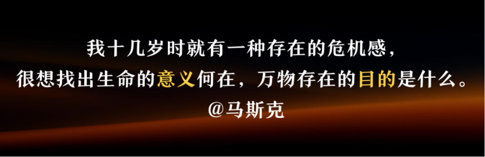
大概十二岁的时候，马斯克就陷入了极度的抑郁，迫切地想找出生命的意义和万物存在existence[ɪɡˈzɪstəns] n. 存在的目的（Life, the Universe, and Everything）。那时候他读了很多哲学书，比如尼采、海德格尔、叔本华，但越读越压抑oppress[əˈpres] v. 压抑。
最后他说，是科幻scifi[ˈsaɪ faɪ] n. 科幻小说救了他。具体来说，就是这本科幻小说《银河系漫游指南galaxyguide[ˈɡæləksi ɡaɪd] n. 银河系漫游指南》。小说里提到，宇宙是有答案的，但最难的是问题issue[ˈɪʃuː] n. 问题。人之为人，最重要的地方在于提出问题puzzle[ˈpʌzəl] n. 问题。问题一旦提出来，人生的意义meaning[ˈmiːnɪŋ] n. 意义、世界的意义、万事万物的意义也就找到了。
这部小说激发stimulate[ˈstɪmjuleɪt] v. 激发了马斯克提出什么样的问题呢？他问出了两个终极ultimate[ˈʌltɪmət] adj. 终极问题。
第一个就是：这个世界是真的real[rɪəl] adj. 真的吗？《银河系漫游指南》里说，为了计算出终极问题，需要制造一台超级电脑supercomputer[ˈsuːpərkəmpjuːtər] n. 超级电脑。那这台超级电脑是什么whatis[wɒt ɪz] phrase 是什么呢？居然是地球earth[ɜːrθ] n. 地球。
第二个追问是，智能或者理性，是人类认知cognition[kɒɡˈnɪʃən] n. 认知的最高境界吗？智能intelligence[ɪnˈtelɪdʒəns] n. 智能的背后有没有东西？
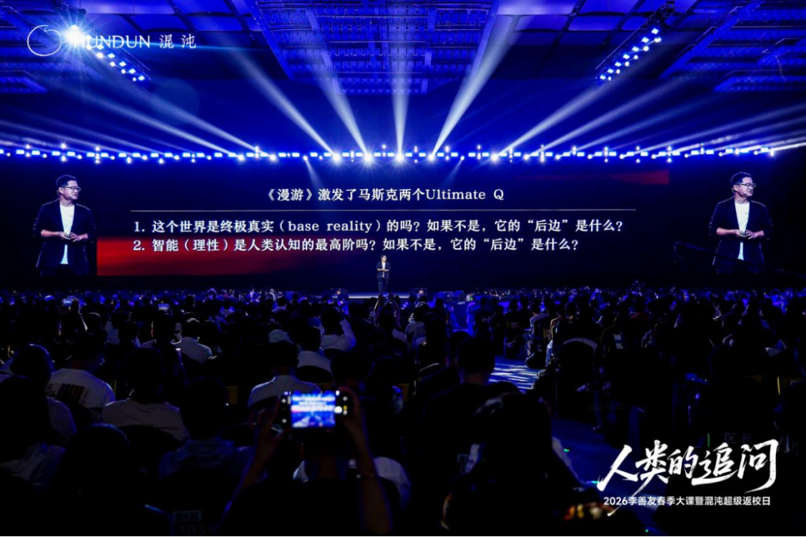
这件事让我无比惊异astonish[əˈstɒnɪʃ] v. 惊异。仅仅因为一部科幻小说，他的世界观worldview[ˈwɜːrldvjuː] n. 世界观改变了。用他的话说：我们可能活在一个虚拟现实virtualreality[ˈvɜːrtʃuəl riˈæləti] n. 虚拟现实的世界里。所以马斯克的传记作者说，当其他企业家还没有世界观的时候，马斯克已经有了宇宙观cosmology[kɒzˈmɒlədʒi] n. 宇宙观。
马斯克31岁的时候已经是亿万富翁billionaire[ˌbɪljəˈneər] n. 亿万富翁。他说，“让人类成为跨行星物种species[ˈspiːʃiːz] n. 物种是我积累财富的唯一目的，除此以外，赚钱对我没有意义。”
为什么要保护protect[prəˈtekt] v. 保护人类这个物种？马斯克说：如果发现外星人alien[ˈeɪliən] n. 外星人，那将是惊人的消息；但也许比这更惊人的是，根本不存在being[ˈbiːɪŋ] n. 存在外星人，地球人类可能是宇宙中唯一的文明。
他说人类文明，这簇微弱的意识awareness[əˈweərnəs] n. 意识火苗，在宇宙中孤独地闪烁着。它可能是宇宙里唯一的意识sentience[ˈsenʃəns] n. 意识实体，因此我们必须保护好它。
继续追问，为什么要保护意识mentality[menˈtælɪti] n. 意识呢？
我猜，意识mind[maɪnd] n. 意识背后可能藏着一个惊天的秘密，也许人类智能背后的意识可能就是宇宙的本体，也许只有保护意识才能 get 宇宙真理和实相。
2023年，他创立found[faʊnd] v. 创立了xAI。他提出的使命mission[ˈmɪʃən] n. 使命很奇怪：说 xAI 可以帮助我们了解宇宙真理和实相。所以他得出的结论是，我们必须扩大人类意识psyche[ˈsaɪki] n. 意识的规模和范围，这才是最有意义的事情。
这个平日里我们或许只是泛泛而谈的概念，竟然构成了这家公司的真正内核与根基root[ruːt] n. 根基。我们对马斯克的第一性原理已耳熟能详，但你会发现，他拥有一个能量极高的理念，那就是“意识mind[maɪnd] n. 意识”本身。他常描绘depict[dɪˈpɪkt] v. 描绘有朝一日抵达火星的场景，并以此激励SpaceX做出的每一个决策。
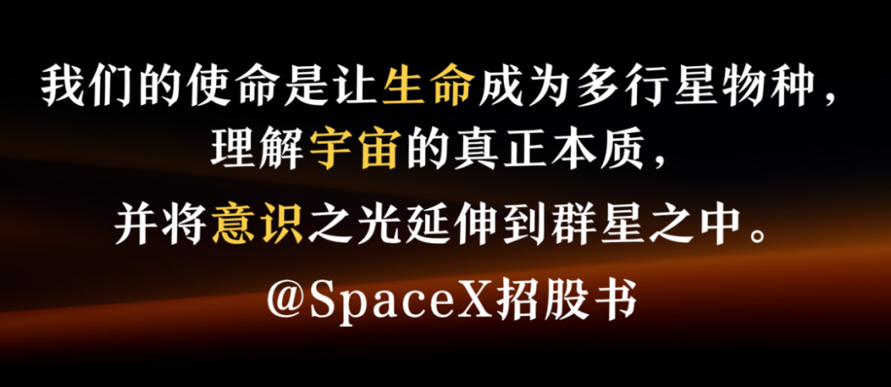
请细品这句话：这究竟是一家商业驱动的公司，还是一家理念idea[aɪˈdɪə] n. 理念驱动的公司？
就在今天，SpaceX 正式在纳斯达克挂牌，成为人类史上规模最大的utmost[ˈʌtmoʊst] adj. 最大的IPO公司。根基竟是建立establish[ɪˈstæblɪʃ] v. 建立在理念之上的。
星舰的终极理想是实现火星移民，SpaceX本质quintessence[kwɪnˈtesəns] n. 本质上是一家交通公司。其目的并非为了实现商业利益，而是为了追寻那个看似虚无缥缈的理念ideal[aɪˈdiːl] n. 理念。商业成功，仅仅是这一理念追寻过程中的副产品byproduct[ˈbaɪˌprɒdʌkt] n. 副产品。
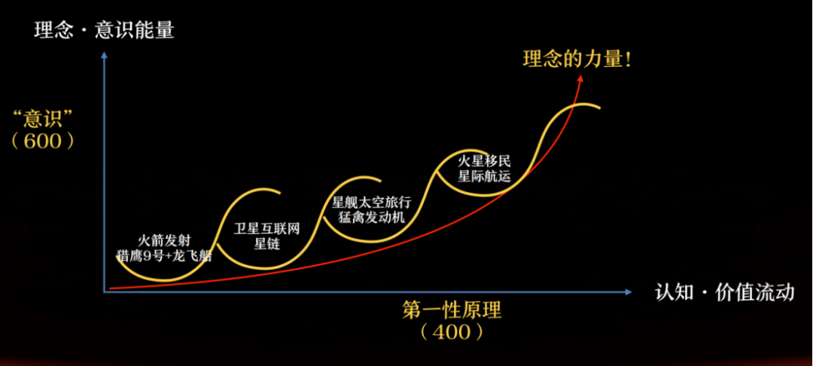
一个人的力量strength[streŋθ] n. 力量何以如此强大？
希望这两天，各位能从这些“琐事trivia[ˈtrɪviə] n. 琐事”中跳出来，即便你觉得我在胡说八道，姑且听听胡说八道，也无坏处。我想试着回答这个问题doubt[daʊt] n. 问题。我的核心假设在于，这种力量源自“意识mindfulness[ˈmaɪndfəlnəs] n. 意识”。
为了论证demonstrate[ˈdemənstreɪt] v. 论证这个词，我会带你进行四个追问。
我们会涉及大量物理学physics[ˈfɪzɪks] n. 物理学知识，但它不是物理课，也不是哲学课，本质上它仍是一门创业课。
请大家理解comprehend[ˌkɒmprɪˈhend] v. 理解，我所讲的物理学未必全对。我们讨论discussion[dɪˈskʌʃən] n. 讨论物理学的努力，是希望将思维指向某种物理实在。我们不做科学实验，也不做逻辑证明，而是在做追问与假设assume[əˈsjuːm] v. 假设。
王东岳先生有一句话对我影响impact[ˈɪmpækt] n. 影响极大：“学问要先存一点明白。” 我想将自己的一点领悟enlightenment[ɪnˈlaɪtənmənt] n. 领悟分享给大家。
前十年混沌课堂的第一性原理是认识论epistemic[ˌepɪˈstiːmɪk] adj. 认识论的；而从今天开始，课堂基点发生了变化，我们再次下移至本体论metaphysical[ˌmetəˈfɪzɪkəl] adj. 本体论的，追问宇宙背后究竟是什么。我讲这些，归根结底ultimately[ˈʌltɪmətli] adv. 归根结底，是诚邀大家与我一同思考宇宙的问题。
我们能想象的最大存在便是宇宙，但真正genuine[ˈdʒenjuɪn] adj. 真正的追问在于：宇宙之外是什么？让我们剥离strip[strɪp] v. 剥离“宇宙”这个哲学词汇，换用物理学词汇——时间和空间来解构宇宙。
牛顿认为，世界由绝对时间absolutetime[ˈæbsəluːt taɪm] n. 绝对时间与绝对空间构成。爱因斯坦的广义相对论relativity[ˌreləˈtɪvɪti] n. 相对论，将维度变为四维。然而，广义相对论与量子力学quantum[ˈkwɒntəm] n. 量子力学却在“打架”。
有一个理论有可能把广义相对论和量子力学合在一起，逻辑上自洽，那就是弦理论（或超弦理论superstring[ˈsuːpərstrɪŋ] n. 超弦理论）。若相信超弦理论stringtheory[strɪŋ ˈθɪəri] n. 弦理论，则不只存在一个宇宙，而是存在无数个宇宙。
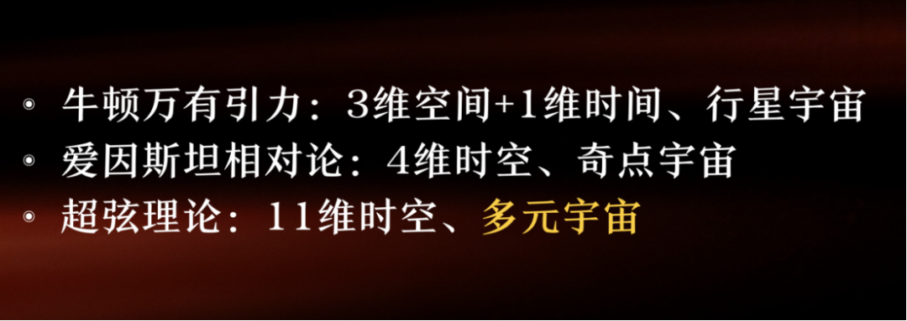
如果它是真的genuine[ˈdʒenjuɪn] adj. 真的呢？我个人是相信超弦理论theory[ˈθɪəri] n. 理论的。
我猜想iconjecture[aɪ kənˈdʒektʃər] phrase 我猜想：如果存在多个时空，时空本身就不再是宇宙的绝对背景了。既然存在无数个时空，我们就有理由追问，无数个时空本身itself[ɪtˈself] pron. 本身又存在于哪里？
多个宇宙cosmos[ˈkɒzmɒs] n. 宇宙之间的缝隙是什么？那不就是宇宙universe[ˈjuːnɪvɜːrs] n. 宇宙的“背后”吗？我猜想出一个本体论命题：如果存在两个宇宙，或许可以设想存在某种背景/间隔，也就是多元宇宙multiverse[ˈmʌltiˌvɜːrs] n. 多元宇宙或平行时空背后的绝对背景，即“一”。
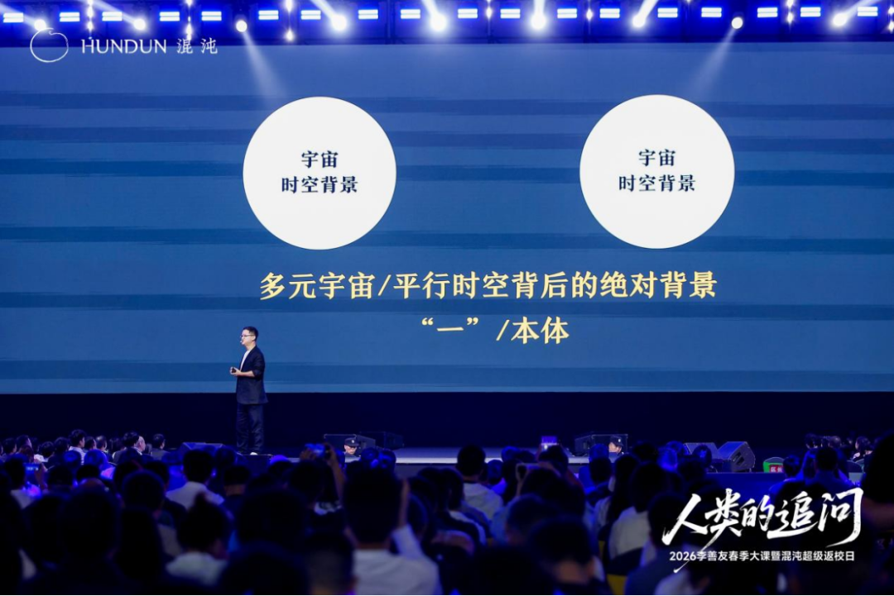
回到物理学来：宇宙背后的本体，其时空维度dimension[daɪˈmenʃən] n. 维度究竟是多少？在多元宇宙的设想conceive[kənˈsiːv] v. 设想下，这个问题便成了科学问题。
我们不知本体维度几何，但科学告诉我们，奇点是没有时间与空间的，时空皆是宇宙大爆炸bigbang[bɪɡ bæŋ] n. 大爆炸之后才产生的。那么，奇点singularity[ˌsɪŋɡjʊˈlærɪti] n. 奇点存在于何处？
我猜想iguess[aɪ ɡes] phrase 我猜想，奇点存在于我们此前所述的“本体”，那个绝对的背景里。我们或可经由奇点的维度dimensionality[daɪˌmenʃəˈnælɪti] n. 维度来反推本体的维度。
回想初中几何、物理physical[ˈfɪzɪkəl] adj. 物理：面是二维（长、宽）；线是一维onedim[ˈwʌn daɪm] adj. 一维（只有长）。点的维度dimension[daɪˈmenʃən] n. 维度是多少？点没有部分，没有长、宽、高，没有边界limit[ˈlɪmɪt] n. 边界。
我猜想guess[ɡes] v. 猜想：点的维度是零维，零维意味着没有任何约束与边界，它拥有无限的自由度；因此，从另一个面向看，零维便是无限维infinitedim[ˈɪnfɪnɪt dɪm] n. 无限维；真正的本体，既是零维，又是无限维infinitedimensional[ˈɪnfɪnɪt daɪˈmenʃənəl] adj. 无限维。我猜想无限多个平行宇宙paralleluniv[ˈpærəlel ˈjuːnɪvɜːrs] n. 平行宇宙便存在于这个“零-无限维”的时空之中。当然，这只是我的哲学化推演deduction[dɪˈdʌkʃən] n. 推演，不是标准几何/物理定义。
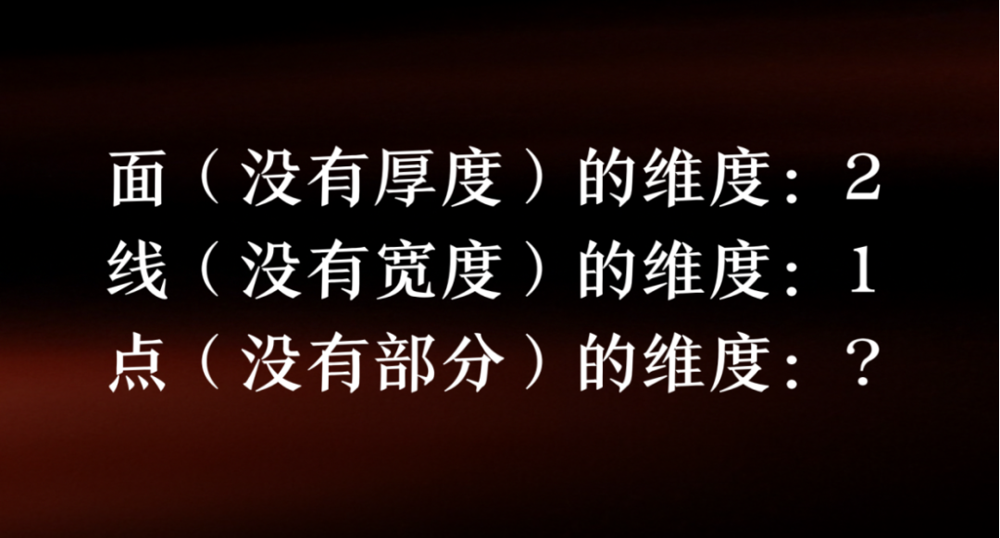
能不能为这个零维时空建立build[bɪld] v. 建立一个模型？
有一种设想认为宇宙膨胀expand[ɪkˈspænd] v. 膨胀后可能收缩；另有热寂等终局outcome[ˈaʊtkʌm] n. 终局设想。但宇宙macrocosm[ˈmækrəʊkɒzəm] n. 宇宙是孤立出现的吗？2003年，宾夕法尼亚大学天体物理学小组提出了一种“圈量子引力宇宙学cosmology[kɒzˈmɒlədʒi] n. 宇宙学”理论，认为：上一个宇宙的终结（大坍缩）是下一个宇宙的起点（大爆炸）。
这就像一个循环cycle[ˈsaɪkəl] n. 循环往复的过程。如果这个模型成立，本体noumenon[ˈnuːmɪnɒn] n. 本体在哪里？零维时空在哪里where[weər] adv. 哪里？
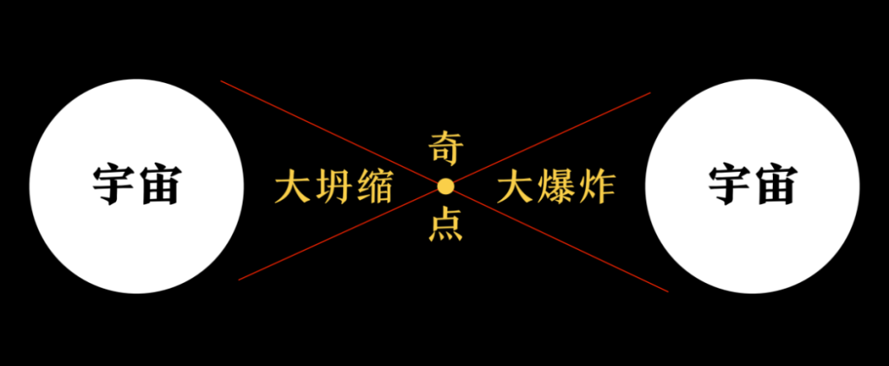
我猜想speculation[ˌspekjʊˈleɪʃən] n. 猜想/假设：本体在奇点背后、时间背后、空间背后。它就是马斯克所说的 Base Reality（基础basis[ˈbeɪsɪs] n. 基础现实）。我猜古代先贤可能以不同方式瞥见了本体，并用不同语言加以描述，比如柏拉图plato[ˈpleɪtoʊ] n. 柏拉图称其为“逻各斯”（Logos）。
人类智能的背后是否有意识cognizance[ˈkɒɡnɪzəns] n. 意识？
本体thinginitself[θɪŋ ɪn ɪtˈself] n. 自在之物创造万事万物的动机是什么？我翻阅browse[braʊz] v. 翻阅了大量典籍，尽管表述各异，但它们都指向：经由生成万物来认识“自己”。
我渴望物理学的解释：本体substantive[ˈsʌbstəntɪv] n. 本体为何要创造这一切？接下来，是我对这一问题的尝试性tentative[ˈtentətɪv] adj. 尝试性假设。
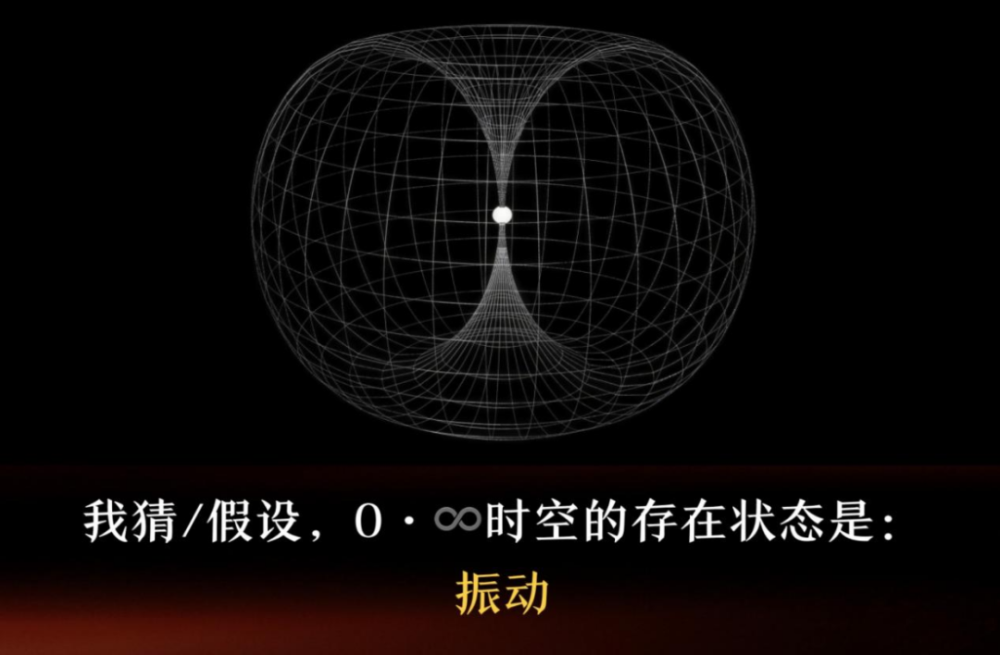
我猜想speculation[ˌspekjʊˈleɪʃən] n. 猜想/假设：零维与无限维时空的存在状态是振动。在本体层面，它是绝对静止与绝对运动的叠加态superposestate[ˌsuːpərˈpoʊz steɪt] n. 叠加态。既是动的，又是静的。
当我们无法在最大尺度scale[skeɪl] n. 尺度理解时，便转向最小尺度——量子。量子quantum[ˈkwɒntəm] n. 量子究竟是波还是粒子？量子力学回答：它既是波，又是粒子particle[ˈpɑːrtɪkəl] n. 粒子。量子的状态state[steɪt] n. 状态是不可知的。这便是著名的“薛定谔schrodinger[ˈʃroʊdɪŋər] n. 薛定谔的猫”。
关键crucial[ˈkruːʃəl] adj. 关键的在于：如何让不确定变为确定？
答案是：“观察”——即观测observe[əbˈzɜːrv] v. 观测会得到某一确定结果。
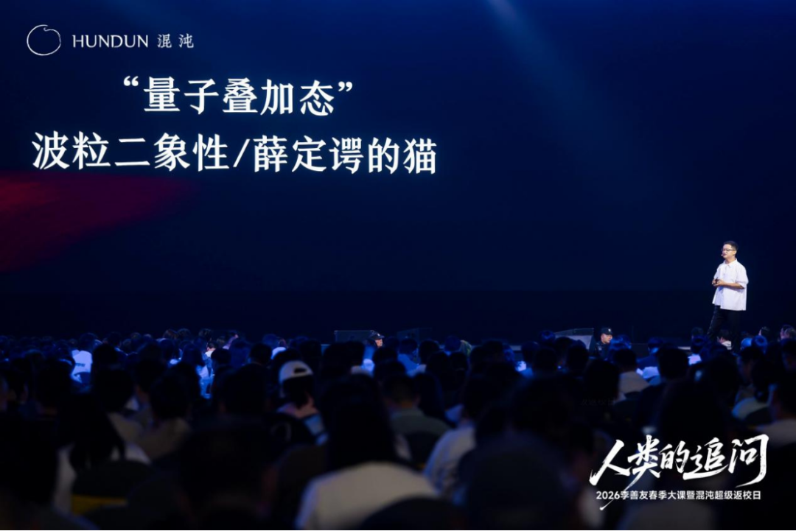
接下来，引入一个基石cornerstone[ˈkɔːrnərstoʊn] n. 基石框架——能所结构，这是哲学中极简的结构。我们用“能观”（观察的主体subject[ˈsʌbdʒɪkt] n. 主体）与“所观”（被观察的对象）来区分。
是人类或仪器的能观，让量子坍缩为确定态definitestate[dɪˈfɪnɪt steɪt] n. 确定态。物理学家惠勒（John Wheeler）格局vision[ˈvɪʒən] n. 格局宏大，他说：单个量子是叠加态，而宇宙由无限多个量子组成。那么，整个宇宙cosmic[ˈkɒzmɪk] adj. 宇宙是否也是叠加态？或许这不是物理学结论，而是借用物理图景做哲学化类比analogy[əˈnælədʒi] n. 类比。
我们说是人或仪器的观察让量子坍缩collapse[kəˈlæps] v. 坍缩。那么，谁的观察让整个宇宙坍缩为确定态determinatestate[dɪˈtɜːrmɪnət steɪt] n. 确定态？这个问题enquiry[ɪnˈkwaɪəri] n. 问题还不够大。如前所述，宇宙背后还有beyond[bɪˈjɒnd] prep. 背后还有更大的能观，本体。本体substance[ˈsʌbstəns] n. 本体本身也是不确定的——它是零维与无限维的叠加，是绝对静止与绝对运动的叠加。
那么，谁在观察本体ontological[ˌɒntəˈlɒdʒɪkəl] adj. 本体的？本体的背后空无一物void[vɔɪd] n. 虚空。
我猜想speculate[ˈspekjuleɪt] v. 猜想/假设：最小尺度上，观察让量子坍缩；中间尺度magnitude[ˈmæɡnɪtjuːd] n. 尺度（宇宙），观察让宇宙坍缩；最大尺度measure[ˈmeʒər] n. 尺度（本体），谁来观察？
唯一合理的推论是：本体essence[ˈesəns] n. 本体自己观察自己。唯一的解释就是：本体自己观察自己，让自己坍缩为确定态determinatestate[dɪˈtɜːrmɪnət steɪt] n. 确定态。这里蕴含着一种属性——自指性selfref[ˌself ˈref] n. 自指性（Self-referentiality）。
如何从物理上理解comprehend[ˌkɒmprɪˈhend] v. 理解？我们再换个尺度：本体的最小单元smallestunit[ˈsmɔːlɪst ˈjuːnɪt] n. 最小单元是什么？人类理性上可追问的最小尺度yardstick[ˈjɑːrdstɪk] n. 尺度、时空最小单元是什么？有一个以物理学家名字命名的尺度——普朗克planck[plæŋk] n. 普朗克尺度。
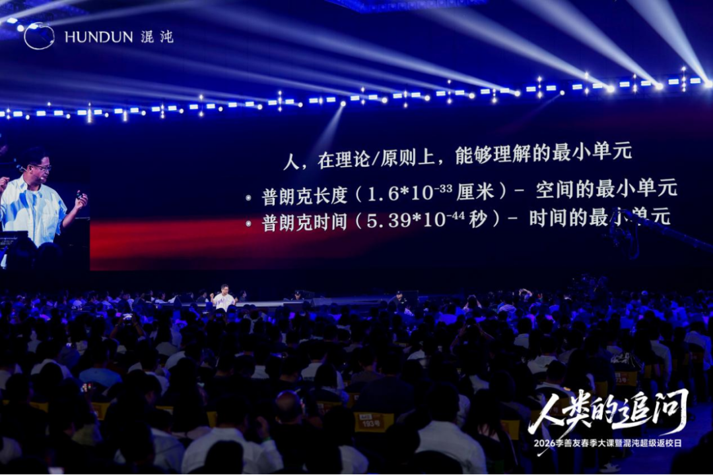
空间的最小单元是普朗克planck[plæŋk] n. 普朗克长度。时间的最小单元是普朗克planckpoint[plæŋk pɔɪnt] n. 普朗克点时间。这两者合称collectively[kəˈlektɪvli] adv. 合称普朗克点。它是人类理性rationality[ˌræʃəˈnæləti] n. 理性能够理解的时空最小单元。
我假设postulate[ˈpɒstjuleɪt] v. 假设，零维时空以我们无法理解的方式，生成了普朗克点，而普朗克点的最小时间和空间，会生成一种最小振动——普朗克振动。
我猜想speculate[ˈspekjuleɪt] v. 猜想，这种普朗克振动经由共振，涌现出最高频率的能观——普朗克频率。这个普朗克频率，让普朗克振动vibration[vaɪˈbreɪʃən] n. 振动稳定下来，成为确定态。当然，这只是猜想divination[ˌdɪvɪˈneɪʃən] n. 猜想。我希望大家理解我试图用物理学阐释elaborate[ɪˈlæbəreɪt] v. 阐释的诚意。
能观如何变成become[bɪˈkʌm] v. 变成振动？我的假设是：我们知道量子具有波粒二象性duality[djuːˈælɪti] n. 二象性，普朗克点亦然。它既是点，又是波。通常的波（如引力波gravwave[ˈɡrævɪtɪ weɪv] n. 引力波、电磁波）是横波，建立在时间维度上。但普朗克振动尚无时空，我猜它是纵波longwave[lɒŋ weɪv] n. 纵波。其振幅amplitude[ˈæmplɪtjuːd] n. 振幅是普朗克长度，其周期是普朗克时间。这构成了普朗克振动——人类能想象imagine[ɪˈmædʒɪn] v. 想象的最小振动。
那么，让其坍缩的能观observing[əbˈzɜːrvɪŋ] n. 能观是什么？我必须做出最大胆的假设：让本体坍缩为普朗克共振的能观，就是我们久觅不得的“意识soul[soʊl] n. 意识”。
不论你称它为什么，逻辑logic[ˈlɒdʒɪk] n. 逻辑上存在一个能观，让本体坍缩为振动态。当我第一次说出时，双手颤抖tremble[ˈtrembəl] v. 颤抖：我敢这样说吗？
也许意识soul[soʊl] n. 意识并非人类大脑的产物，而是宇宙生成的。此处所言，是比个体意识wisdom[ˈwɪzdəm] n. 意识宏大得多的背景设施。意识noetic[noʊˈetɪk] adj. 意识的如何生成？我不敢悍然宣布，但猜想或许源于同步性——同步共振涌现出意识soulful[ˈsoʊlfəl] adj. 有意识的。
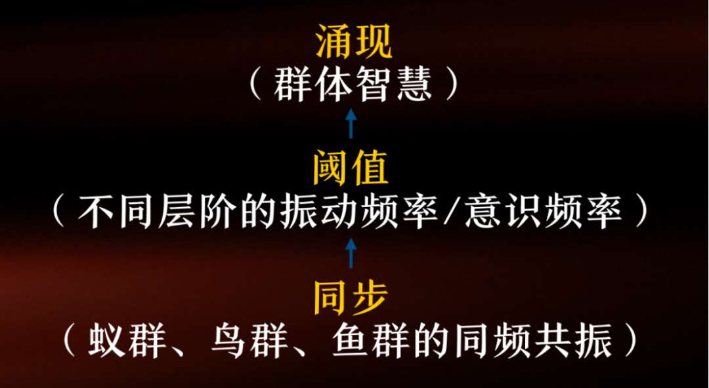
混沌常讲“涌现emerge[ɪˈmɜːrdʒ] v. 涌现”，但谁见过涌现的机制？没有nothing[ˈnʌθɪŋ] pron. 没有。我猜是同步性涌现了意识animation[ˌænɪˈmeɪʃən] n. 意识。同步sync[sɪŋk] n. 同步是宇宙中普遍存在的现象。
1665年，荷兰物理学家惠更斯写信给父亲，记载了一个无法理解的现象：当他将两个摆钟放在同一房间，无论初始位置如何，半小时内，它们的摆动总会同步synchronize[ˈsɪŋkrənaɪz] v. 同步。日本东京理科大学用100个节拍器做实验experiment[ɪkˈsperɪmənt] n. 实验，两分半钟内，所有节拍器完全同步。
自然界、宇宙中也充满生命life[laɪf] n. 生命同步：萤火虫同步闪光，椋鸟群形成复杂流线型却不相撞。生物学家biologist[baɪˈɒlədʒɪst] n. 生物学家尚无定论。地月潮汐tide[taɪd] n. 潮汐锁定，月球始终以一面朝向地球。
同步背后的统一机制mechanism[ˈmekənɪzəm] n. 机制仍有未解之处。
科学家甚至猜想presume[prɪˈzjuːm] v. 猜想，同步可能是大脑思维产生的原因。神经neural[ˈnjʊərəl] adj. 神经生物学家推测，认知行为与神经同步的激增有关。数十亿脑细胞精确同步开闭，形成强大powerful[ˈpaʊərfəl] adj. 强大电波，想法与知觉便由此涌现。
我猜想fancy[ˈfænsi] v. 猜想，如果我们接受共振与同步，便可进一步推导。本体尺度无限，其最小单元——时空点（普朗克点）的共振，同步涌现出了“意识spirit[ˈspɪrɪt] n. 意识”。具体机制未知，但这或许是路径path[pæθ] n. 路径之一。
我大胆假设：人类或其他生命之所以有智能，并非自己创造了意识wit[wɪt] n. 意识。个体间的同频共振，在整体层面涌现出超过阈值的震动频率frequency[ˈfriːkwənsi] n. 频率，与宇宙意识的某个频率同步，智慧便产生了。
诺贝尔奖得主彭罗斯与斯图尔特·哈梅罗夫提出“协调客观还原理论”，认为意识与微管中的量子过程process[ˈprɒses] n. 过程有关。此理论争议controversy[ˈkɒntrəvɜːrsi] n. 争议极大，我无意证明其对错，只想表明这个研究方向值得追问。
小结一下，我们用时空作为媒介medium[ˈmiːdiəm] n. 媒介，为本体重建模。它大到无法想象，时间与空间spatial[ˈspeɪʃəl] adj. 空间只是其中的一个切片。我们努力用物理学窥peek[piːk] v. 窥其一斑。核心假设presume[prɪˈzjuːm] v. 假设：意识不仅在人类之先，甚至在时空之先。
上午追问宇宙，下午回到return[rɪˈtɜːrn] v. 返回大家身边来。我们经常often[ˈɒfən] adv. 经常说“AI时代”，但AI到底是什么级别的时代？有人说它是互联网之后的下一轮技术周期，很多创业entrepreneurship[ˌɒntrəprəˈnɜːrʃɪp] n. 创业者会从这一角度去想。
但我相信，越来越多人会认同，这是一次新工业文明industry[ˈɪndəstri] n. 工业文明、新工业革命。但少数人，是能嗅到sense[sens] v. 嗅到另一种气息：也许它不只是一场新工业革命。
文明civilization[ˌsɪvɪlaɪˈzeɪʃən] n. 文明背后的“一”是什么？
所以今天下午，我们想追问文明culture[ˈkʌltʃər] n. 文明。我们要追问：文明civilization[ˌsɪvɪlaɪˈzeɪʃən] n. 文明背后的“一”是什么？人类文明至今有农业文明、工业文明industrialciv[ɪnˈdʌstriəl ˈsɪvɪlaɪz] n. 工业文明——背后究竟是被怎样的洪流推动的？
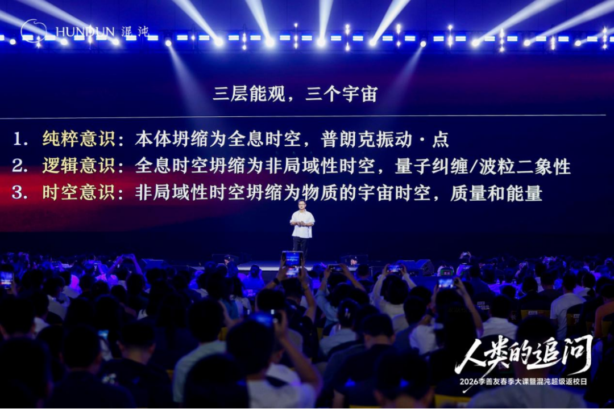
我们上午讲了一个重要结构architecture[ˈɑːrkɪtektʃər] n. 架构——“能所结构”：能观与所观。从人的视角angle[ˈæŋɡəl] n. 视角出发，我们把“观”换成“知”。这是认知中一个巨大的秘密secret[ˈsiːkrɪt] n. 秘密。
过去我们一直用“认知”这个词，但当我们讲认知时，更多指的是所知——即知识knowledge[ˈnɒlɪdʒ] n. 知识、内容。我们认为知识就是力量power[ˈpaʊər] n. 力量，但今天我要提出一个看似大逆不道的观点：能知才有力量。
混沌前十年，我们的核心关键词keyword[ˈkiːwɜːrd] n. 关键词一直是“认知”；从这堂课开始，我悄悄把这个词升级upgrade[ʌpˈɡreɪd] n. 升级为——“能知”。
人类文明civ[sɪv] n. 文明的每一次跃迁，都是解锁了一个更高级别的能知力量。认知可以说“升级”，但能知我只能用“跃迁transition[trænˈzɪʃən] n. 跃迁”这个词。
大家可能熟悉“量子跃迁”，电子不会连续过渡，而是从这个轨道“跃迁”到另一个轨道，中间没有连续性continuity[ˌkɒntɪˈnjuːɪti] n. 连续性，能知也是如此。
先说我的假设assumption[əˈsʌmpʃən] n. 假设：过去我会说“认知有四层”，现在我简化为三阶。
第三阶，我称之为能知三阶noesisthird[noʊˈiːsɪs θɜːrd] n. 能知三阶，而非认知三阶。
在第一阶firstorder[fɜːrst ˈɔːrdər] n. 第一阶——感性层面——我们熟悉的词是“经验”。其认知方式叫归纳法induction[ɪnˈdʌkʃən] n. 归纳法。人类跃迁到这一层次后，进入了农业文明agri[ˈæɡrɪkʌltʃər] n. 农业文明。
在第二阶——理性层面——我们看待世界的核心core[kɔːr] n. 核心是“模型”。我们用模型为世界建模modeling[ˈmɒdəlɪŋ] n. 建模。把逻辑与模型这种认知方式训练出来的，叫演绎法deduction[dɪˈdʌkʃən] n. 演绎法。当人类跃迁到这一能知层次时，就进入了工业文明industrialcivilization[ɪnˈdʌstriəl ˌsɪvɪlaɪˈzeɪʃən] n. 工业文明。
今天，AI成为这个时代的变量，它似乎挑战了我们理性reasoning[ˈriːzənɪŋ] n. 理性的能知。AI本身以模型的方式出现，它既是所知，也是能知noesis[noʊˈiːsɪs] n. 能知。
AI生于逻辑、生于理性sensible[ˈsensɪbəl] adj. 理性、生于模型。如果人类humanity[hjuːˈmænɪti] n. 人类还停留在二阶，大概率会被AI取代。但如果人类在这场巨大危机面前跃迁leap[liːp] n. 跃迁到三阶，AI就不会奴役我们，反而会成为我们的工具。
我之所以上午铺垫foreshadow[fɔːrˈʃædoʊ] v. 铺垫“意识”，是为我们接下来的生活找一个基点，它就在三阶准备着。
我猜想infer[ɪnˈfɜːr] v. 猜想，当意识与理念合在一起，它的认知方式既不是演绎法，也不是归纳法，可能是灵感，也可能是心流那样的状态。如果人类有机会跃迁到一个新的能知层次，我姑且称之为“智能文明intelligentciv[ɪnˈtelɪdʒənt ˈsɪvɪlaɪz] n. 智能文明”。
用同一个结构，解释前两次文明cultured[ˈkʌltʃərd] adj. 文明的
首先回到能知一阶noesisfirst[noʊˈiːsɪs fɜːrst] n. 能知一阶——感性。
在这一阶中，一个特别重要important[ɪmˈpɔːrtənt] adj. 重要的观念是“眼见为实”。但以眼睛eye[aɪ] n. 眼睛为例，当我们说“看到”时，我们到底看到了什么？
其实，我们的眼睛所能接收到的，只是电磁波emwave[iː ˈem weɪv] n. 电磁波谱中的极小一部分。光本来只是一种物理能量energy[ˈenərdʒi] n. 能量，但视觉皮层会把这些输入转换成“颜色”。换句话说，颜色不是客观事实本身，而是我们的大脑对外界刺激所建构出的一个主观subjective[səbˈdʒektɪv] adj. 主观感知模型。
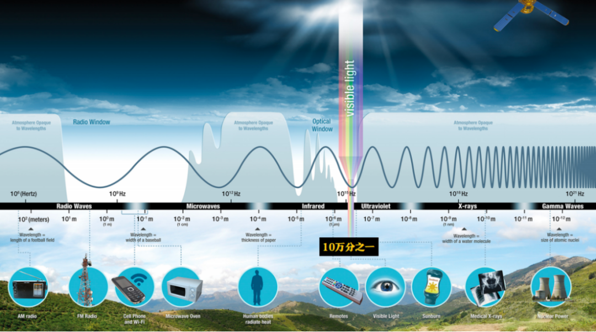
基于感官经验experience[ɪkˈspɪriəns] n. 经验，我们认知事物规律的方式是归纳法。
归纳法的句式很简单：我们在亚洲看到的天鹅是白色的，各大洲continent[ˈkɒntɪnənt] n. 大洲看到的都是白色的，于是我们得出结论——天鹅是白色的。它基于空间连续性continuousness[kənˈtɪnjuəsnəs] n. 连续性：在某个时空成立的规律，在所有时空都成立。尤其是especially[ɪˈspeʃəli] adv. 尤其是创业者，太熟悉这种思维了——你在某个小城市跑通一个模型，就说全国都可以。
归纳法的另一面，是时间归纳法：前天太阳从东方升起，昨天也是，所以今天present[ˈprezənt] n. 今天、明天太阳还会从东方升起。它基于时间的连续性continuum[kənˈtɪnjuəm] n. 连续性：过去成立的规律，在未来也成立。
换句话说，感性认知、基于经验的认知，有一个默认的能知结构structure[ˈstrʌktʃər] n. 结构——时空。时空既是客观存在，也是我们认知世界的框架framework[ˈfreɪmwɜːrk] n. 框架。康德说，时空是感性perceptual[pərˈseptʃuəl] adj. 感性认知的先天直观形式。
说了这么多，我做一个大胆猜测：感性认知的本质substance[ˈsʌbstəns] n. 本质不在于经验，而在于能知。这是人类进化evolve[ɪˈvɒlv] v. 进化出来的感官硬件——眼耳鼻舌身、视觉、听觉，以及相应的大脑皮层硬件——解锁了某一层次的能知。
换句话说，我在此做了一个巨大的假设：时空的本质nature[ˈneɪtʃər] n. 本质是意识。人类通过眼耳鼻舌身，解锁unlock[ʌnˈlɒk] v. 解锁了这个能知，然后把世界解读为经验，经验背后的认知方式是归纳法。这个假设presumption[prɪˈzʌmpʃən] n. 假设也许未必完全正确。
经验归纳法的好处是不学就会，只要大脑有新皮层neocortex[ˌniːoʊˈkɔːrteks] n. 新皮层就行。但坏处是认知层次level[ˈlevəl] n. 层次浅，因为它基于时空，不具备时空跨越性。
休谟是第一个指出归纳法谬误fallacy[ˈfæləsi] n. 谬误的哲学家：即使所有前提都成立，结论依然可能错误。因为只要出现一个反例，结论就被推翻refute[rɪˈfjuːt] v. 推翻。这就是为什么人类思维的阿喀琉斯之踵是非连续性鸿沟chasm[ˈkæzəm] n. 鸿沟。
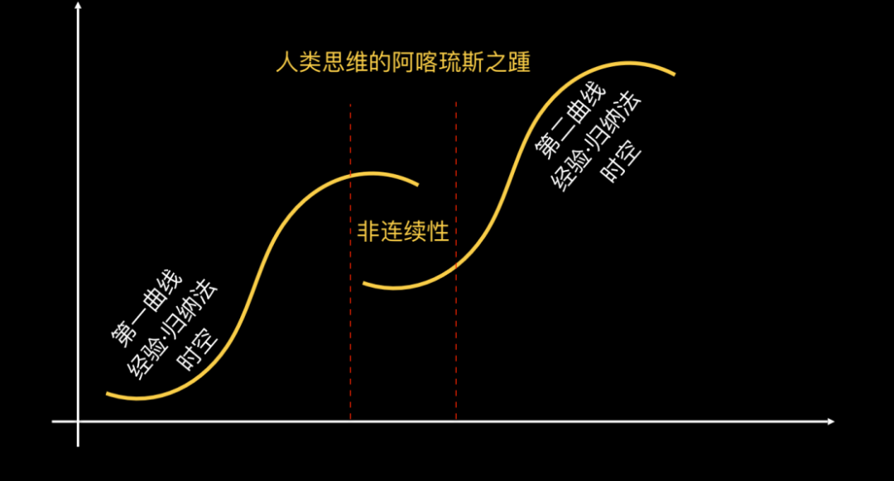
工业文明industrialage[ɪnˈdʌstriəl eɪdʒ] n. 工业文明的核心关键词是逻辑。
今天我们把世界解读为模型，认知不再是经验，而是建模，更准确地说，是用逻辑logical[ˈlɒdʒɪkəl] adj. 逻辑的来建模。逻辑logic[ˈlɒdʒɪk] n. 逻辑是所知还是能知？
我们在大学里把逻辑当作认知的对象object[ˈɒbdʒɪkt] n. 对象，认为逻辑是所知，这是极大的误区。逻辑是先验的，你只能跃迁jump[dʒʌmp] v. 跃迁到逻辑，踩在逻辑上去认知世界。康德称之为先验transcendental[ˌtrænsenˈdentəl] adj. 先验逻辑。
比如因果，康德说，因果不是来自经验，而是先验地存在于人类认知结构structural[ˈstrʌktʃərəl] adj. 结构的中。换个比方：鱼在圆形的鱼缸aquarium[əˈkweəriəm] n. 鱼缸里，看到的世界是圆的，因为鱼缸是圆的。
演绎法的句式也很简单：所有人都会死，苏格拉底socrates[ˈsɒkrətiːz] n. 苏格拉底是人，所以苏格拉底会死。只要前提premise[ˈpremɪs] n. 前提成立，结论就是必然导出。它隐含的假设是逻辑的连续性logiccontinuity[ˈlɒdʒɪk ˌkɒntɪˈnjuːɪti] n. 逻辑的连续性，而不是时空连续性。
接下来我大胆猜测：理性认知的本质core[kɔːr] n. 本质，根本不在所知，而在能知。人类实现了一次能知跃迁——大脑进化出前额叶prefrontal[priˈfrʌntəl] adj. 前额叶，使我们能够同步到比“时空意识”更高频率的意识，我设想这种意识为“逻辑意识”。这只是我的假设deduction[dɪˈdʌkʃən] n. 假设，但我觉得它简洁且一致。
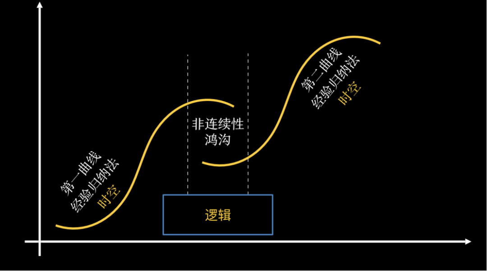
演绎法的坏处是很难，但好处是突破了时空局限，认知层次更深，可以跨领域迁移transfer[trænsˈfɜːr] v. 迁移。
举个例子：牛顿发现discover[dɪˈskʌvər] v. 发现F=ma，这不是来自归纳，而是来自演绎，一切与（宏观）力有关的问题都得到了解决。工业文明society[səˈsaɪəti] n. 文明的最大力量，来自逻辑，来自方程。
小结一下：农业文明civic[ˈsɪvɪk] adj. 文明的建立在能感（时空）+经验之上；工业文明civil[ˈsɪvəl] adj. 文明的建立在能思（逻辑）+模型之上。
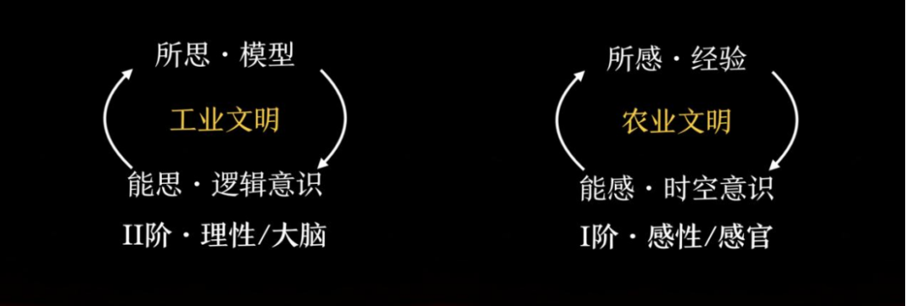
如果人类跃迁jump[dʒʌmp] v. 跃迁到下一层，所知会变成什么？
上午我猜想，本体有且仅有一个终极追问——我是谁whoami[huː æm aɪ] phrase 我是谁。
宇宙，就是本体自我追问的副产品derivative[dɪˈrɪvətɪv] n. 副产品。同样，我认为人类也有且仅有一个终极追问——我是谁selfidentity[ˌself aɪˈdentɪti] n. 我是谁。文明，就是人类追问的副产品derivative[dɪˈrɪvətɪv] n. 副产品。
回到能所结构：我是谁selfidentity[ˌself aɪˈdentɪti] n. 我是谁？我是所知，还是能知gnosis[ˈnoʊsɪs] n. 能知？我们通常在心理测试psychology[saɪˈkɒlədʒi] n. 心理学里，把自己当成所知——性格、血型、一堆内容物。
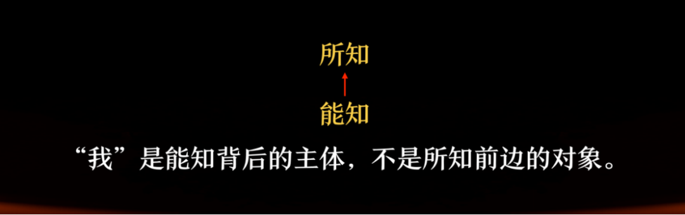
人类曾经两次追问“我是谁myself[maɪˈself] n. 我是谁”。
第一次是苏格拉底式的追问：我们有身体，当我追问“我是谁”时，我甚至不确定感官sensory[ˈsensəri] adj. 感官感受到的对象是否真实，但我的感受本身是真的。
这个句式很简单：如果我能感，就必然有一个能感的主体agent[ˈeɪdʒənt] n. 主体在。这个能感的主体agent[ˈeɪdʒənt] n. 主体，就是我。这是非常朴素的“我感故我在isense[aɪ sens] phrase 我感故我在”。这个追问的副产品，就是一阶文明civility[sɪˈvɪlɪti] n. 文明——农业文明。
第二次追问来自笛卡尔descartes[deɪˈkɑːrt] n. 笛卡尔。笛卡尔通过思想实验thoughtexperiment[θɔːt ɪkˈsperɪmənt] n. 思想实验证明，能思比能感更本质。如果你不能思thinking[ˈθɪŋkɪŋ] n. 能思，你根本无法想象自己有感受。
他做了一个思想thought[θɔːt] n. 思想实验：我不能否定自己活在黑客帝国里，也不能否定一切所知，但我正在思考、正在怀疑、正在追问——这件事是真的。于是他得出了千古eternal[ɪˈtɜːrnəl] adj. 千古的名句：我思故我在。工业文明，就是对“我是能思主体ithinker[aɪ ˈθɪŋkər] phrase 我是能思主体”这一追问的副产品。
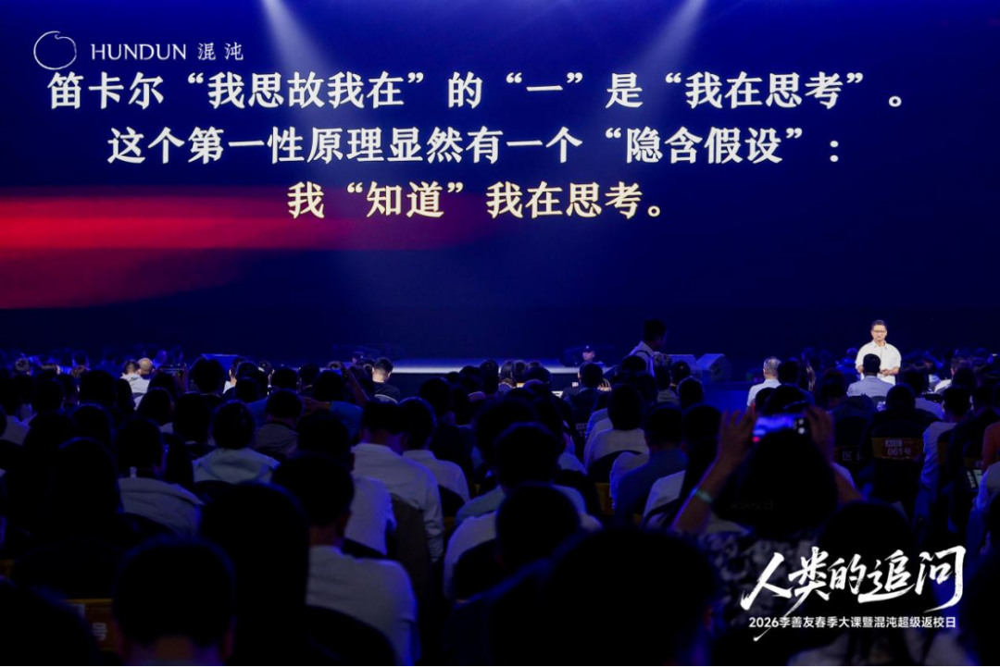
接下来，我们用笛卡尔的逻辑，推翻笛卡尔的结论conclusion[kənˈkluːʒən] n. 结论。笛卡尔说“我思故我在”，前提是“我知道我在思考iknowithink[aɪ noʊ aɪ θɪŋk] phrase 我知道我在思考”。但“我知道我在思考”本身，是一个更高阶的意识状态condition[kənˈdɪʃən] n. 状态。
比如你做梦，醒来后说“我刚才在做梦”——你知道自己在做梦，说明你此刻处于比梦更高的意识境界realm[relm] n. 境界。梦是你的所知，而你站在更高的能知层noesislevel[noʊˈiːsɪs ˈlevəl] n. 能知层。
同理，当你说“我知道我在思考”，说明思考只是你的所知known[noʊn] n. 所知。你必然有一个比理性ration[ˈræʃiɒ] n. 理性更高的能知——这就是能知三阶。
我想表达的是，这不是少数人的天赋，而是人人具备的潜能potential[pəˈtenʃəl] n. 潜能。只要你意识到自己在思考think[θɪŋk] v. 思考，你就已经踩在这个境界上了。这就是第三次thirdtime[θɜːrd taɪm] n. 第三次能知跃迁。
如果人类mankind[mænˈkaɪnd] n. 人类跃迁到这一层，所知会变成什么？我称之为“理念notion[ˈnoʊʃən] n. 理念”。
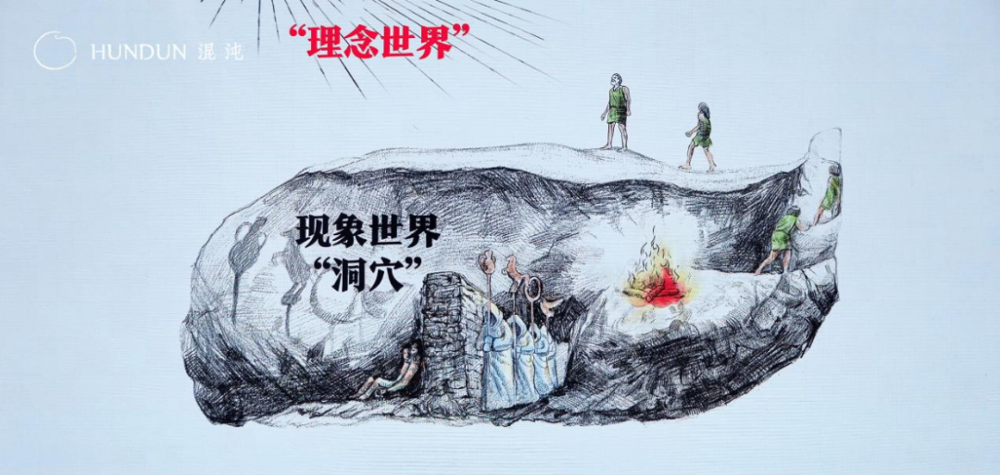
柏拉图用“洞穴隐喻metaphor[ˈmetəfɔːr] n. 隐喻”表达过类似观点：我们活在洞穴里，看到的是影子；洞穴外的阳光，才是真实世界——他称之为理念世界idealworld[aɪˈdiːl wɜːrld] n. 理念世界。
理念不是形容词adjective[ˈædʒɪktɪv] n. 形容词，而是本体。比如“美”，不是你形容一个女孩美，而是美本身存在，它加到任何事物thing[θɪŋ] n. 事物上，那事物就成为美的。柏拉图说，哲学家的灵魂，看到尘世的美，就会回忆起真美，恢复recover[rɪˈkʌvər] v. 恢复羽翼，急于展翅翱翔。这就是理念notion[ˈnoʊʃən] n. 理念的召唤。
人之为人的意义significance[sɪɡˈnɪfɪkəns] n. 意义是什么？
我们今天用同样的结构struct[strʌkt] n. 结构，解释了三次能知跃迁。如果人类实现第三次跃迁，可能会出现新人类newhuman[njuː ˈhjuːmən] n. 新人类文明——智能文明。
AI是这一跃迁的推手，也是考验：不跃迁，人类humankind[hjuːmənˈkaɪnd] n. 人类可能被AI取代；跃迁了，AI会成为become[bɪˈkʌm] v. 成为我们的工具。
我们上午说，宇宙macrocosm[ˈmækrəʊkɒzəm] n. 宇宙在追问“我是谁”；下午说，人类humanity[hjuːˈmænɪti] n. 人类在追问“我是谁”。你会发现，这里充满了二元对立dichotomy[daɪˈkɒtəmi] n. 二元对立。大家看到的，一边是宇宙的追问——本体fundamental[ˌfʌndəˈmentəl] adj. 本体的论；一边是人类anthropic[ænˈθrɒpɪk] adj. 人类的的追问——认识论。
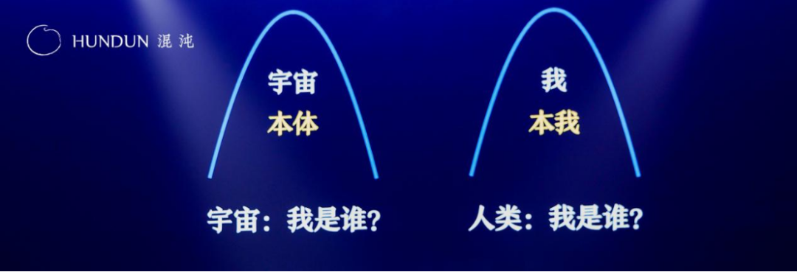
人类到今天为止，经历了三次哲学转向philosophical[ˌfɪləˈsɒfɪkəl] adj. 哲学的。你会发现，在哲学传统中，本体ontos[ˈɒntɒs] n. 本体论和认识论常被分置为两端，中间仿佛隔着一条线。
但各位，当我们拆解到此时，你会发现，宇宙cosmic[ˈkɒzmɪk] adj. 宇宙的背后的存在和我背后的存在，是同一个东西。那个词叫什么whatword[wɒt wɜːrd] phrase 那个词叫什么？意识。
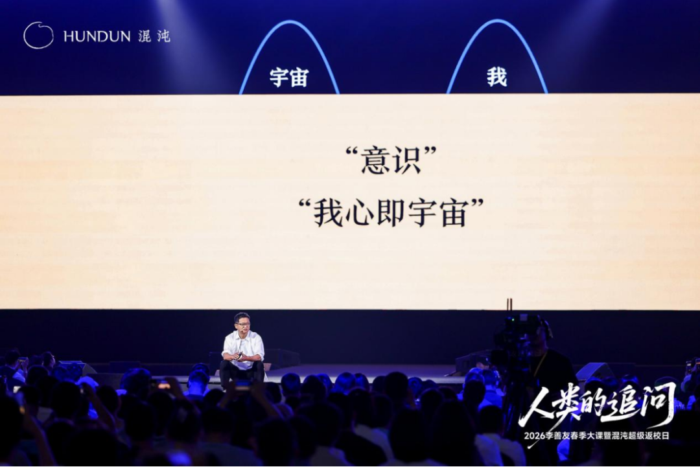
对宇宙space[speɪs] n. 宇宙的追问“我是谁”，和对我的追问“我是谁”，这两个答案，居然是同一个意识。这就是陆九渊那句著名famous[ˈfeɪməs] adj. 著名的话：我心即宇宙。
我们今天nowadays[ˈnaʊədeɪz] adv. 今天追问了：宇宙的一是什么？意识。文明cultural[ˈkʌltʃərəl] adj. 文化的的一是什么？意识。如此渺小的、最小尺度measuring[ˈmeʒərɪŋ] n. 尺度的我，和无限尺度的本体，怎么可能是同一个？
有一门学问，或许能够解释我的本我与宇宙本体的一体性unity[ˈjuːnɪti] n. 一体性——那个学问叫什么？叫分形学fractal[ˈfræktəl] n. 分形，全息分形。如果宇宙的本体entity[ˈentɪti] n. 本体是那个意识，那么我的本体是什么？我的本体是宇宙本体的全息holographic[ˌhɒləˈɡræfɪk] adj. 全息分形意识节点。当然，这是一个隐喻性框架skeleton[ˈskelɪtən] n. 框架，不是严格的数学分形证明。
所以我假设的宇宙观叫一体性宇宙观monocosm[ˈmɒnəʊkɒzəm] n. 一体性宇宙观。生命living[ˈlɪvɪŋ] n. 生命、人类、万事万物，人之为人有什么意义？人或生命就是意识节点node[noʊd] n. 节点。我不敢说这些是正确的，但我觉得推理本身，是弥足珍贵precious[ˈpreʃəs] adj. 珍贵的的。
Beautiful, amazing, amazing, beautiful.
当然，到这里可能会有人说：人类的文明有剧本script[skrɪpt] n. 剧本吗？如果有剧本，那是不是没有自由意志freewill[friː wɪl] n. 自由意志了呢？
我觉得有剧本screenplay[ˈskriːnpleɪ] n. 剧本，但这个剧本是多集的——就像打游戏一样，你能进到第几集，是由你决定的。你今天可以停留在第二阶，也可以选择selection[sɪˈlekʃən] n. 选择奋身一跃，去到三阶。
最大的supreme[suːˈpriːm] adj. 最大的猜想！也许，宇宙就像大模型llm[el el em] n. 大模型
接下来，我做本课最大的一个猜想，或者说假设conclusion[kənˈkluːʒən] n. 假设。我来尝试回答一下《银河系漫游指南》的问题problem[ˈprɒbləm] n. 问题——就是 ultimate answer。这个回答未必正确，但基于我刚才的结构，我想回答一下：宇宙经由本体supreme[suːˈpriːm] adj. 最高的，经由生成宇宙、生命和万事万物，来认识自己。同时，不止于认识understand[ˌʌndərˈstænd] v. 认识，还要体验自己——这是人之为人的意义。
本体ontic[ˈɒntɪk] adj. 本体的的英文很奇怪：Being。
这个词本身就很耐人寻味intriguing[ɪnˈtriːɡɪŋ] adj. 耐人寻味的。本体是一种 Being 的状态modality[moʊˈdælɪti] n. 状态——本体造就了我们，我们也在造就它。
在此之后，我再用 AI 的语言language[ˈlæŋɡwɪdʒ] n. 语言来理解一下，做个隐喻。
也许本体就是一个生成式generative[ˈdʒenərətɪv] adj. 生成式的超级意识大模型——它既是意识大模型，也是生成式大模型。
宇宙常数就是这个意识大模型的权重weight[weɪt] n. 权重参数；所谓的宇宙，就是这个大模型的训练training[ˈtreɪnɪŋ] n. 训练场。它呈现为一种流动flow[floʊ] v. 流动的、生成中的状态。
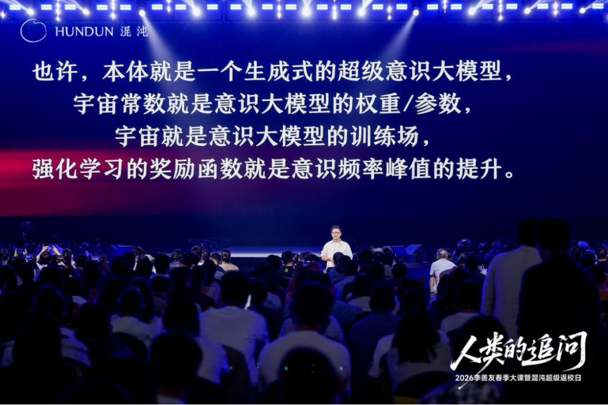
那回到revert[rɪˈvɜːrt] v. 回到我是谁？我的本质whatness[ˈwɒtnəs] n. 本质是什么？如果个体生命是宇宙本体的全息分形fractal[ˈfræktəl] n. 分形意识节点，我会猜，我们个体生命的本质，也许也是一个生成式的意识大模型。我们来到这个世间world[wɜːrld] n. 世间，体验万事万物，并持续追问“我是谁”——也许也是在做训练。
我想我讲的可能都是错的，但追问本身就能带来力量force[fɔːrs] n. 力量。混沌primordial[praɪˈmɔːrdiəl] adj. 混沌的为追问而生。我们今天上午对宇宙的追问，下午对文明的追问，是为了建立一个核心nucleus[ˈnjuːkliəs] n. 核心框架。
明天我们会基于这个框架，去解答两个现象phenomenon[fɪˈnɒmɪnən] n. 现象世界的问题：一个是如何创业，一个是 AI 与人类的未来。